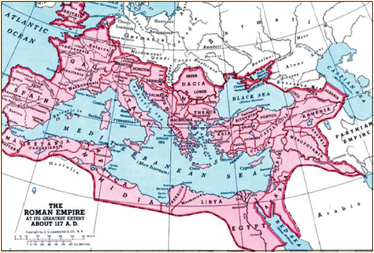

indice:v
Peste Antonino
La peste Antonina fue la primera peste que afectó globalmente al mundo occidental. Perturbó todas las dimensiones de vida del género humano en el Imperio Romano tales como la economía, la política, la religión y la cultura. La literatura especializada menciona que la mortalidad alcanzó un 10% de la población.
tipo de virus
La peste antonina, 165-180, conocida también como la plaga de Galeno, porque fue este famoso médico quien la describió, fue una epidemia de viruela o sarampión que afectó al Imperio romano. Fue llevada por las tropas que regresaban de la guerra pártica de Lucio Vero en Mesopotamia.

video relacionado al tema